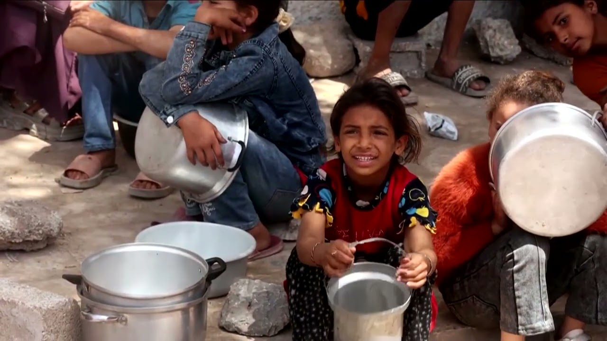

【“历史的错误一方”：内塔尼亚胡谈法国、加拿大、英国领导人 | 路透社】
Summary: Israeli Prime Minister Benjamin Netanyahu accuses France, Britain, and Canada of supporting Hamas by demanding an end to Israel's Gaza offensive, warning it emboldens the group and threatens Israel's security.
摘要： 以色列总理本杰明·内塔尼亚胡指责法国、英国和加拿大要求结束以色列在加沙的军事行动是在支持哈马斯，警告这将助长该组织并威胁以色列安全。

⏱️ Estimated Reading Time: 3 min
You're on the wrong side of justice.
你们站在了正义的对立面。
You're on the wrong side of humanity and you're on the wrong side of history.
你们站在了人性的对立面，也站在了历史的对立面。
Israeli Prime Minister Benjamin Netanyahu on Thursday accuse the leaders of France, Britain, and Canada of saying they want Palestinian militant group Hamas to remain in power after they threatened to take concrete action if Israel did not stop its latest offensive in Gaza.
以色列总理本杰明·内塔尼亚胡周四指责法国、英国和加拿大的领导人，称他们希望巴勒斯坦激进组织哈马斯继续掌权，此前他们威胁称如果以色列不停止在加沙的最新攻势，将采取具体行动。
Now, these leaders may think that they're advancing peace.
现在，这些领导人可能认为他们在推动和平。
They're not.
他们并没有。
They're emboldening Hamas to continue fighting forever.
他们在助长哈马斯永远继续战斗。
The Israeli government has been fighting back against the mounting international pressure on it over the war in Gaza as the flow of images depicting destruction and hunger in the enclave has increasingly shifted global opinion against Israel.
以色列政府一直在反击因加沙战争而日益增加的国际压力，因为描绘该地区破坏和饥饿的图像流使全球舆论越来越反对以色列。
Despite the bloody October 7 attacks by Hamas militants, officials have been especially concerned about growing calls for more countries to recognize a Palestinian state as part of a two-state solution to resolve decades of conflict in the region.
尽管哈马斯武装分子在10月7日发动了血腥袭击，但官员们尤其担心越来越多的国家呼吁承认巴勒斯坦国，作为解决该地区数十年冲突的两国方案的一部分。
Are proposing to establish a Palestinian state and reward these murders.
这是在提议建立一个巴勒斯坦国并奖励这些谋杀者。
Netanyahu argues a Palestinian state would threaten Israel.
内塔尼亚胡认为巴勒斯坦国会威胁以色列。
He framed the killing of two Israeli embassy staffers in Washington on Tuesday by a man who allegedly shouted free Palestine as a clear example of that threat.
他将周二华盛顿一名据称高喊“解放巴勒斯坦”的男子杀害两名以色列使馆工作人员的事件作为这一威胁的明确例证。
In the video message released by his office, Netanyahu also said Hamas had thanked France's Emanuel Macron, Britain's Karma, and Canada's Marani over what he said was their demand for an immediate end to the war.
在其办公室发布的视频信息中，内塔尼亚胡还表示，哈马斯感谢法国的埃马纽埃尔·马克龙、英国的卡梅伦和加拿大的马尔罗尼，称他们要求立即结束战争。
The leader statement on Monday did not make that exact demand.
周一领导人的声明并未明确提出这一要求。
Instead, it pushed Israel to halt its new military offensive on Gaza and to lift its restrictions on humanitarian aid.
相反，它敦促以色列停止在加沙的新军事攻势并解除对人道主义援助的限制。
Massively scale up humanitarian assistance.
大规模增加人道主义援助。
Hamas had issued a statement welcoming the move.
哈马斯发表声明对这一举动表示欢迎。
However, all three countries list the group as a terrorist organization and have said it should have no role in running Gaza after the war.
然而，这三个国家都将该组织列为恐怖组织，并表示战后它不应在管理加沙方面发挥作用。
France's foreign minister said in response his country is committed to Israel security and combating anti-semitism.
法国外长回应称，该国致力于以色列的安全和打击反犹太主义。
In a radio interview, Britain's armed forces minister also backed Israel's right to self-defense, but added, quote, "Self-defense must be conducted within the bounds of international humanitarian law.
在一次广播采访中，英国武装部队部长也支持以色列的自卫权，但补充说：“自卫必须在国际人道法的范围内进行。”